100 reisverhalen voor onderweg!

1: Notitie

6: Hardboiled
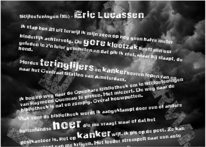
16: Eric Lucassen
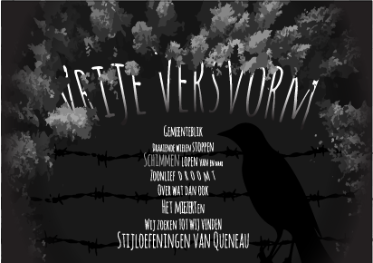
19: Vrije versvorm
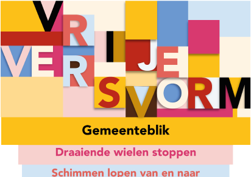
19: Vrije versvorm

20: Littérature définitionnelle
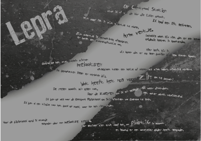
25: Lepra
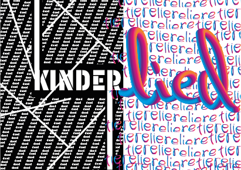
25: Kinderlied
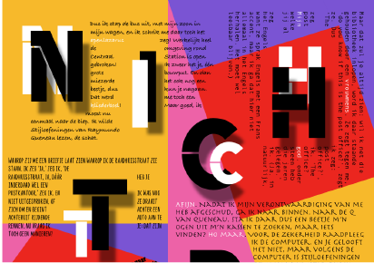
26: Nichterig
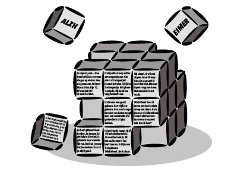
28: Alzheimer
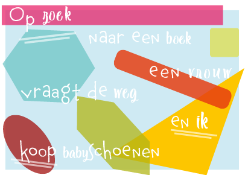
47: Haiku

47: Haiku

49: Ollebolleke
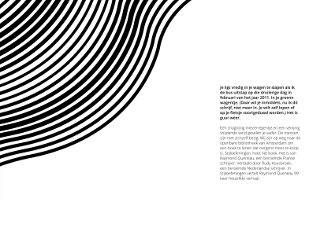
55: Van vader tot zoon
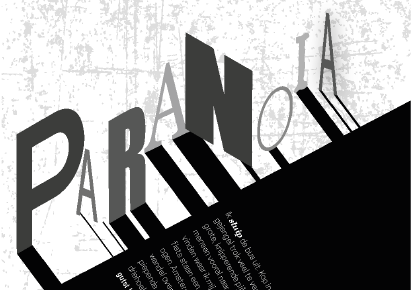
57: Paranoia

57: Paranoia
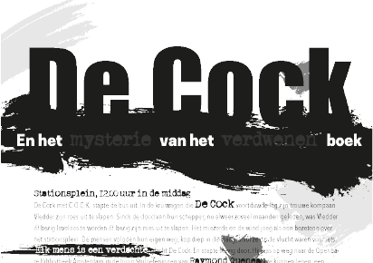
83: De Cock en het raadsel van het verdwenen boek

87: Code

89: Zombie

93: Nico Dijkshoorn die Mart Smeets imiteert

99: Verrassing